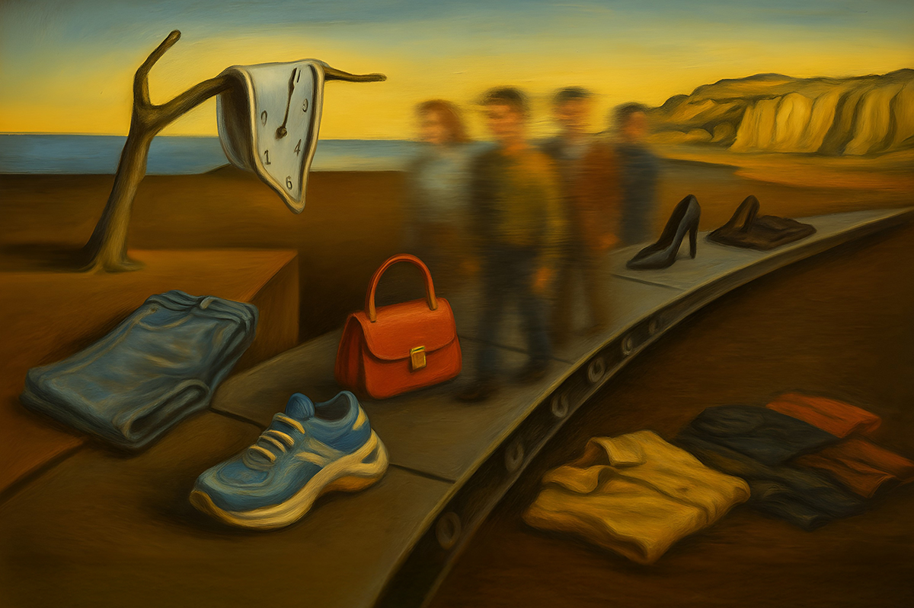
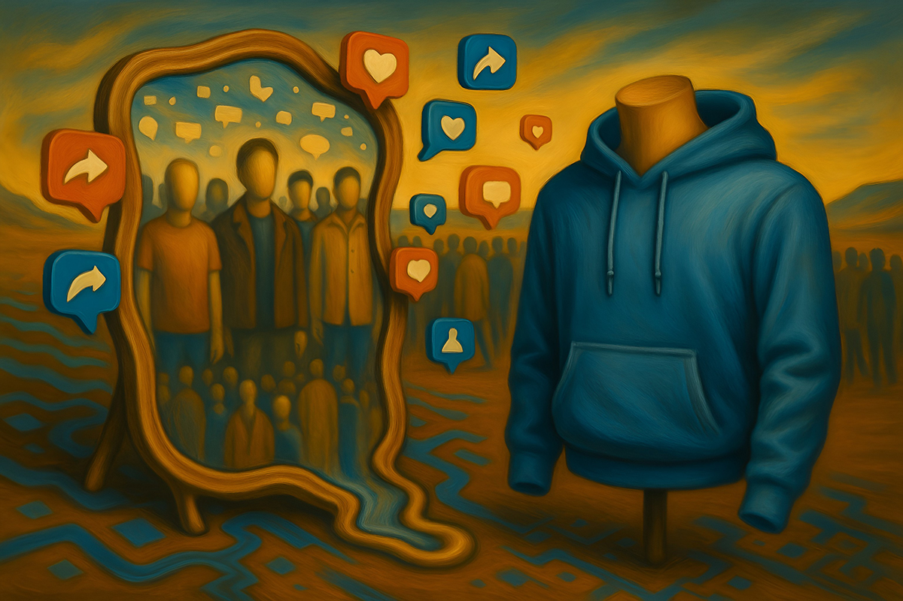
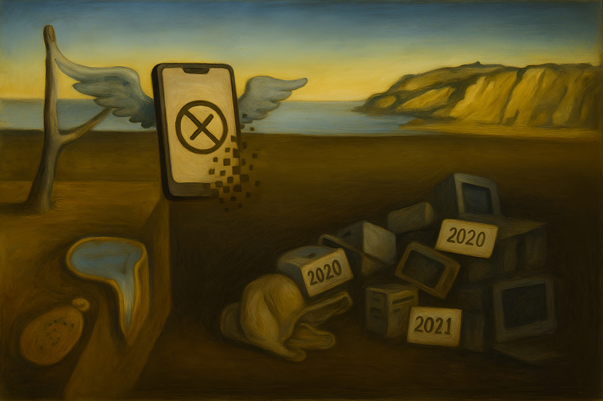

Obsolescencia programada
¿Por qué las tendencias duran cada vez menos?
¿Por qué las tendencias duran cada vez menos?

Últimamente, hemos visto como las diferentes casas de moda mundialmente reconocidas han pasado por transiciones. Solo durante marzo, se anunciaron cambios relevantes en los directores creativos de Versace, Balenciaga y Loewe. A estos se les suman mucho más que ocurrieron durante 2024.
¿A qué responde esto? ¿Son las tendencias cada vez más efímeras y eso demanda respuestas más rápidas de las marcas de moda? Y llevándolo a otras industrias, ¿es posible ver cómo esto pasa con las marcas de tecnología también?

Primero, tenemos que entender cómo se crea una tendencia. Las tendencias son corrientes donde influyen diversos factores, como la cultura, los avances tecnológicos y el comportamiento de los consumidores. Nada de esto es aislado, por ejemplo, si se pone de moda la música urbana, probablemente eso se refleje en la moda.
¿Por qué siempre decimos que “todo vuelve”? Se supone que cada 20 o 30 años los diseñadores suelen mirar atrás, porque es el tiempo necesario para que una nueva generación pueda mirar al pasado con otros ojos. Esos tiempos se han acelerado con las redes sociales, porque la cultura de la inmediatez hace que queramos todo rápido, por lo que también las modas nos aburren en menos tiempo.
Tanto es así que ya se está usando el término revival spinal, para explicar este espiral sin freno que hace que a los dos años ya encontremos alguna prenda como “vintage”. Y es que está comprobado que todo lo nostálgico vende, y el plazo para que algo nos genere nostalgia es cada vez más corto.

Lo mismo ocurre con la tecnología. No sé ustedes, pero yo cada vez siento que me quedo más atrás. Es como si nos compráramos una cosa y automáticamente ya estamos fuera de tiempo con las actualizaciones. Peor incluso, pasan algunos años y nuestros dispositivos ya no soportan actualizaciones de software nuevas.
A este fenómeno se le conoce como “obsolescencia programada”. El nombre intimida, pero básicamente es la teoría que dice que los objetos tecnológicos están diseñados para morir cada cierta cantidad de años y quedar obsoletos, lo que hace que sigamos consumiendo.
En Francia la obsolescencia ya es considerada delito, tema que se puso en la escena pública cuando en 2017 las empresas Epson, HP, Brother y Canon fueron llevadas a juicio por limitar la vida útil de sus impresoras.
Es lógico preguntarse si las redes sociales y su uso tienen algo que ver con esto. Si bien es un poco pronto para que existan teorías, hay varios hechos objetivos que pueden tener que ver.
Moda y tecnología ya no dictan lo que viene: simplemente responden a lo que la sociedad pide. En un mundo donde lo viral es lo vigente, las marcas tienen dos opciones: adaptarse o quedar obsoletas. Casos hay muchos, y quizás el más conocido es el de Kodak.
Nosotros ya nos hemos acostumbrado a esta velocidad. Por eso, la verdadera pregunta ahora es: ¿queremos seguir subiéndonos a este carro, o no? ¿Será este el comienzo del regreso de lo clásico y lo atemporal?
 Actualidad
ActualidadEl recordado programa noventero “Venga Conmigo” marcó a toda una generación en Chile. Su exitoso segmento “Corazones Service” se transformó…
 Actualidad
ActualidadHace aproximadamente 2 meses comenzamos con el cierre de lo que empezó en julio como el “Compariniverse”.
 Actualidad
ActualidadHace unos meses lanzamos Compariniverse: la primera campaña en Chile protagonizada por una celebridad completamente clonada con IA.